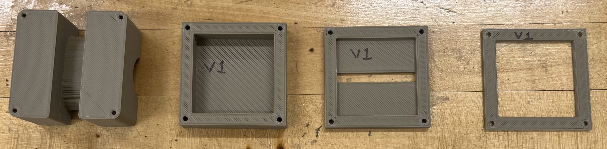
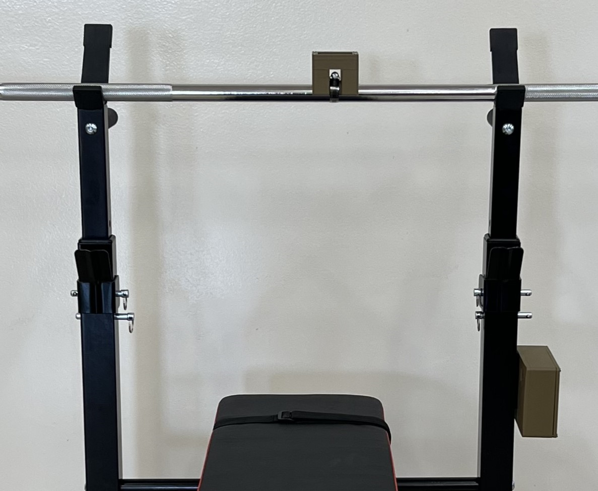
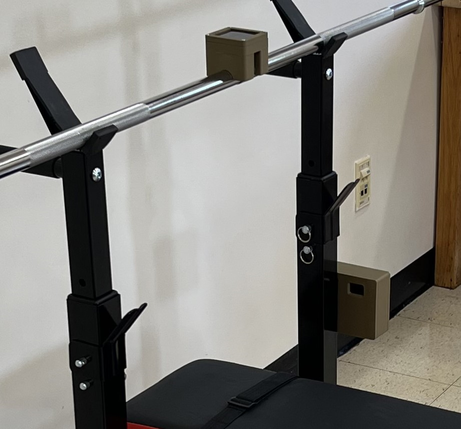

Sensor System Circuit

Sensor System Housing

Base System Circuit

Base System Housing

Front View of Both Systems

The Workout Buddy is a standalone, wireless system designed by Bravo Builders to help users keep track of their fitness progress by monitoring reps and sets in free weight workout routines. Created for any gym-goer seeking to fast track their fitness goals, The Workout Buddy provides a seamless connection between the user and free weight equipment to log workout data effortlessly. This is done by using a motion tracking sensor that is fitted to a barbell and communicates raw movement data to its respective weight rack-mounted base system. The user can simply choose the weights they would like to use, transmit their workout plan from their smart device to the base system, and proceed with their workout.